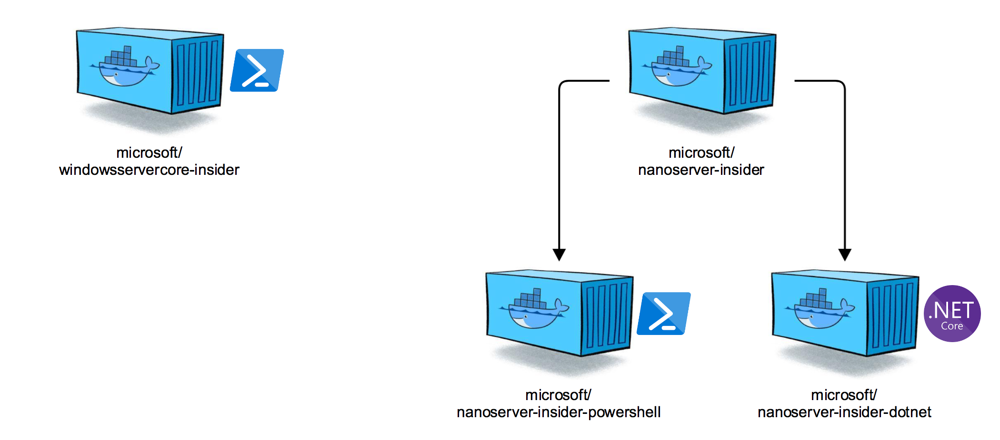
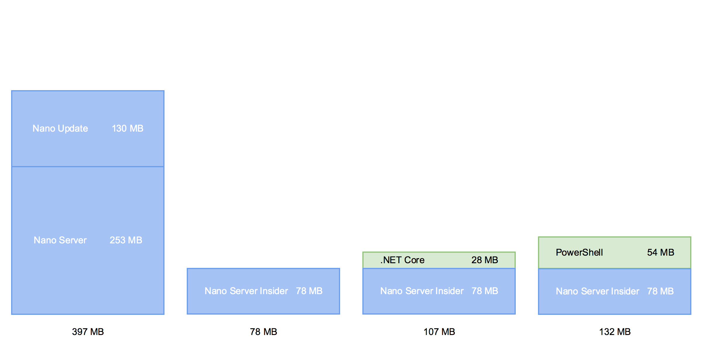
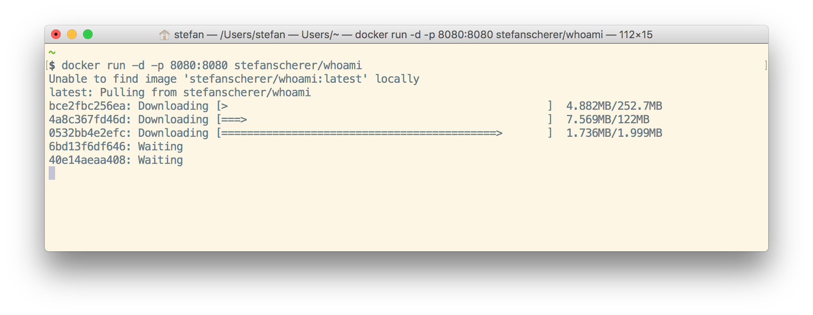
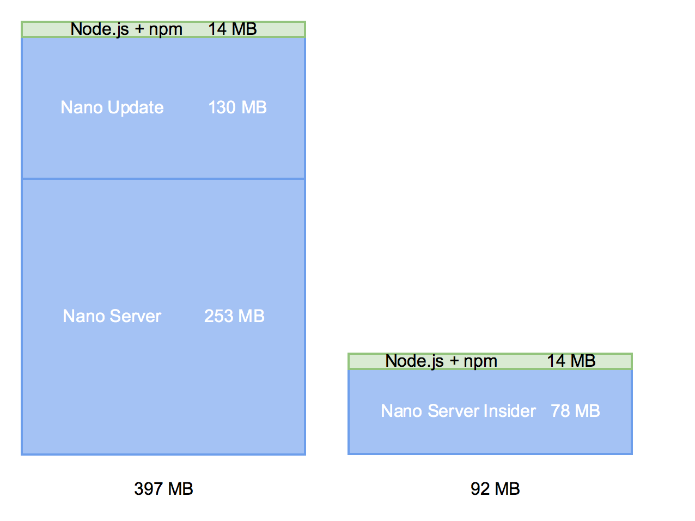
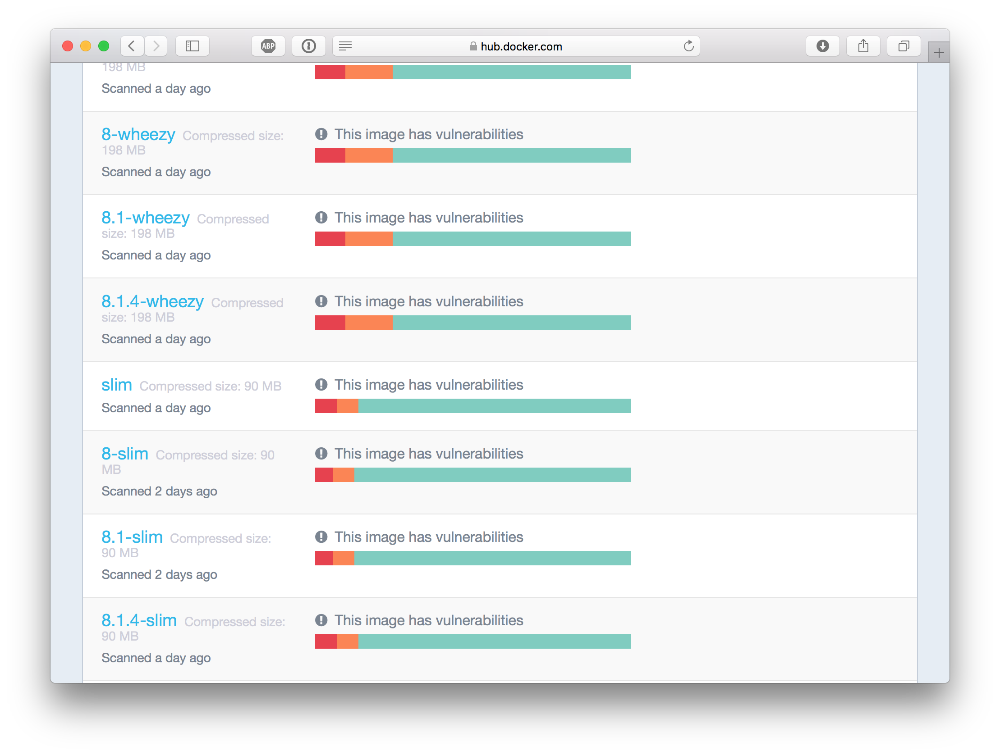
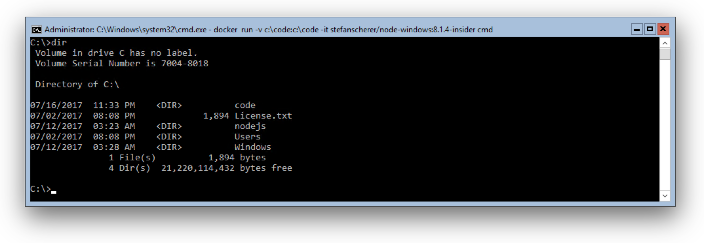
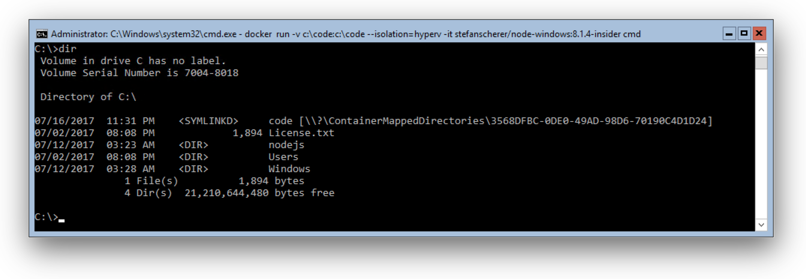

Last week the first Insider preview container images appeared on the Docker Hub. They promise us much smaller sizes to have more lightweight Windows images for our applications.
To use these Insider container images you also need an Insider preview of Windows Server 2016 or Windows 10. Yes, this is another great announcement that you can get early access and give feedback to the upcoming version of Windows Server. So let's grab it.
Windows Server Insider
-
Register at Windows Insider program https://insider.windows.com and join the Windows Server Insider program.
-
Download the Windows Server Insider preview ISO from https://www.microsoft.com/en-us/software-download/windowsinsiderpreviewserver
Now you can create a VM and install Docker. You can either build the VM manually and follow the docs "Using Insider Container Images" how to install Docker and pull the Insider container images. Or you can use my Packer template and Vagrant environment to automate these steps. The walkthrough is described at
https://github.com/StefanScherer/insider-docker-machine
Windows Insider images
There are four new Docker images available with a much smaller footprint.

- microsoft/windowsservercore-insider
- microsoft/nanoserver-insider
- microsoft/nanoserver-insider-dotnet
- microsoft/nanoserver-insider-powershell
The Windows Server Core Insider image got down from 5 GB to only 2 GB which saves a lot of bandwidth and download time.
You may wonder why there are three Nano Server Insider images and why there is one without PowerShell.
Aiming the smallest Windows base image
If we compare the image sizes of the current microsoft/nanoserver image with its base layer and update layer with the new Insider images you can see the reason.

If you want to ship your application in a container image you don't want to ship a whole operating system, but only the parts needed to run the application.
And to ship faster is to ship smaller images. For many applications you do not need eg. PowerShell inside your base image at runtime which would take another 54 MByte to download from the Docker registry.
Let's have a look at current Windows Docker images available on the Docker Hub. To run a Golang webserver for example on an empty Windows Docker host you have to pull the 2MB binary and the two NanoServer base layers with hundreds of MB to run it in a container.

Of course these base images have to be downloaded only once as other NanoServer container images will use the same base image. But if you work with Windows containers for a longer time you may have noticed that you still have to download different update layers from time to time that pull another 122 MB.
And if the NanoServer base image is much smaller then the updates also will be smaller and faster to download.
With the new Insider container images you can build and run containerized .NET core applications that are still smaller than the NanoServer + PowerShell base image.
Node.js
Another example is providing a Node.js container image based on the new NanoServer Insider image with only 92 MByte. We have just cut off "3" hundred MB.

If we compare that with some of the Linux Node.js container images we are at about the size of the the slim images.

Multi-stage build
To build such small Windows images comes with a cost. You have to live without PowerShell. But the new multi-stage build introduced with Docker 17.05 really helps you and you can use PowerShell before the final image layers are built.
If you haven't heard about multi-stage builds its concept is to have multiple FROM instructions in a Dockerfile. Only the last FROM until the end of the file will build the final container image. This is also called the last stage. In all the other stages you don't have to optimze too much and can use the build cache much better. You can read more about multi-stage builds at the Docker Blog.
Let's have a closer look how to build a small Node.js base image. You can find the complete Dockerfile on GitHub.
In the first stage I'm lazy and even use the microsoft/windowsservercore-insider image. The reason is that I'm using the GPG tools to verify the downloads and these tools don't run quiet well in NanoServer at the moment.
# escape=`
FROM microsoft/windowsservercore-insider as download
SHELL ["powershell", "-Command", "$ErrorActionPreference = 'Stop'; $ProgressPreference = 'SilentlyContinue';"]
RUN Invoke-WebRequest ...
RUN Expand-Archive ...
The Dockerfile has a second FROM instruction which then uses the smallest Windows base image. In that stage you normally COPY deploy files and folders from previous stages. In our case we copy the Node.js installation folder into the final image.
The one RUN instruction sets the PATH environment variable with the setx command instead of PowerShell commands.
FROM microsoft/nanoserver-insider
ENV NPM_CONFIG_LOGLEVEL info
COPY --from=download /nodejs /nodejs
RUN setx PATH "%PATH%;C:\nodejs;%APPDATA%\npm"
CMD [ "node.exe" ]
Users of such a Node.js base image can work as usual by COPY deploy their source tree and node_modules folder into that image and run the application as a small container.
FROM stefanscherer/node-windows:8.1.4-insider
WORKDIR /code
COPY . /code
CMD ["node.exe", "app.js"]
So all you have to do is change the FROM instruction to the smaller insider Node.js image.
Further Insider images
I have pushed some of my first Insider images to the Docker Hub so it may be easier for you to try out different languages.
- stefanscherer/node-windows:6.11.1-insider
- stefanscherer/node-windows:8.1.4-insider
- stefanscherer/golang-windows:1.8.3-insider
- stefanscherer/dockertls-windows:insider
If you want to see how these images are built, then you can find the Dockerfiles in the latest pull requests of my https://github.com/StefanScherer/dockerfiles-windows repo.
Docker Volumes
If you have worked with Docker Volumes on Windows you may know this already. Node.js and other tools and languages have problems when they want to get the real name of a file or folder that is mapping from the Docker host into the container.
Node.js for example thinks the file is in the folder C:\ContainerMappedDirectories, but cannot find the file there. There is a workaround described in Elton Stoneman's blog post "Introducing the 'G' Drive" to map it to another drive letter.
With the new Insider preview I see a great improvement on that topic. Running normal Windows containers without the HyperV isolation there is no longer a symbolic link.
If we run the Node.js container interactively and map the folder C:\code into the container we can list the C:drive and see that the code folder is a normal directory.
docker run -v C:\code:C:\code stefanscherer/node-windows:8.1.4-insider cmd /c dir

With this setup you are able to mount your source code into the Node.js container and run it eg. with nodemon to live reload it after changing it on the host.
Unfortunately this is not available with the Hyper-V isolation that is the default on Windows 10 Insider machines.
Running the same command with --isolation=hyperv shows the symlinked directory which Node.js cannot handle at the moment.
docker run -v C:\code:C:\code --isolation=hyperv stefanscherer/node-windows:8.1.4-insider cmd /c dir

But this improvement in native Windows containers looks very promising to solve a lot of headache for all the maintainers of Git for Windows, Golang, Node.js and so on.
Conclusion
Having smaller Windows container images is a huge step forward. I encourage you to try out the much smaller images. You'll learn how it feels to work with them and you can give valuable feedback to the Microsoft Containers team shaping the next version of Windows Server.
Can we make even smaller images? I don't know, but let's find it out. How about naming the new images? Please make suggestions at the Microsoft Tech Community https://techcommunity.microsoft.com.
Please use the comments below if you have further ideas, questions or improvements to share. You can follow me on Twitter @stefscherer to stay up to date with Windows containers.